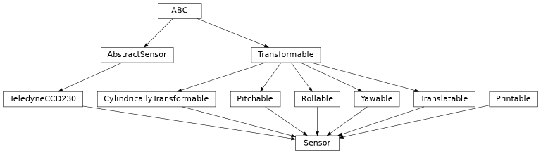

Sensor#
- class esis.optics.Sensor(manufacturer='Teledyne/e2v', family='CCD230-42', serial_number=None, grade=None, width_pixel=<Quantity 15. um>, num_pixel_x=2048, num_pixel_y=2064, num_blank=50, num_overscan=2, cte=<Quantity 99.9995 %>, readout_noise=<Quantity 4. electron>, readout_mode='transfer', temperature=<Quantity 248. K>, width_package_x=<Quantity 42. mm>, width_package_y=<Quantity 61. mm>, distance_radial=<Quantity 0. mm>, azimuth=<Quantity 0. deg>, translation=<Quantity 0. mm>, pitch=<Quantity 0. deg>, yaw=<Quantity 0. deg>, roll=<Quantity 0. deg>, position_image=<Quantity 0. mm>)[source]#
Bases:
Printable,Rollable,Yawable,Pitchable,Translatable,CylindricallyTransformable,TeledyneCCD230A model of the CCD sensors used to detect light.
Attributes
The angle that the detector has been rotated about the axis of symmetry.
The charge transfer efficiency of the sensor.
The distance between the axis of symmetry and the center of the detector.
The model number or product family of this sensor.
The quality of the device.
The company which produced the sensor.
The number of blank columns at the start of each row.
The number of overscan columns at the end of each row.
The number of pixels along the horizontal and vertical axes.
The number of pixels that are used to detect light.
The number of pixels along the horizontal axis of the CCD sensor.
The number of pixels along the vertical axis of the CCD sensor.
The number of taps along the long axis of the CCD sensor.
The number of taps along the short axis of the CCD sensor.
The pitch angle of this sensor.
The position of the center of the FOV on the sensor for the target wavelength.
The frame readout mode of the sensor.
The standard deviation of the error on each pixel value.
The roll angle of this sensor.
A unique number which identifies this sensor.
The operating temperature of this sensor.
the coordinate transformation between the global coordinate system and this object's local coordinate system
An additional translation vector.
The physical size of the light sensitive area of the sensor.
The vertical and horizontal width of the physical sensor package.
The horizontal size of the physical sensor package.
The vertical size of the physical sensor package.
The physical size of a single pixel on the imaging sensor.
The yaw angle of this sensor.
Methods
__init__([manufacturer, family, ...])dark_current([temperature])Calculate the rate of charge accumulation when the sensor is not illuminated.
to_string([prefix])Public-facing version of the
__repr__method that allows for defining a prefix string, which can be used to calculate how much whitespace to add to the beginning of each line of the result.Inheritance Diagram
- Parameters:
manufacturer (str)
family (str)
serial_number (None | str)
grade (None | str)
width_pixel (Quantity)
num_pixel_x (int)
num_pixel_y (int)
num_blank (int)
num_overscan (int)
cte (Quantity)
readout_noise (Quantity)
readout_mode (Literal['full-frame', 'transfer'])
temperature (Quantity | AbstractScalar)
width_package_x (Quantity)
width_package_y (Quantity)
distance_radial (Quantity | AbstractScalar)
azimuth (Quantity | AbstractScalar)
translation (Quantity | AbstractCartesian3dVectorArray)
pitch (Quantity | AbstractScalar)
yaw (Quantity | AbstractScalar)
roll (Quantity | AbstractScalar)
position_image (Quantity | AbstractCartesian2dVectorArray)
- dark_current(temperature=None)#
Calculate the rate of charge accumulation when the sensor is not illuminated.
- Parameters:
temperature (None | Quantity | AbstractScalar) – The temperature of the sensor. If
None, the value oftemperatureis used.
Examples
- to_string(prefix=None)#
Public-facing version of the
__repr__method that allows for defining a prefix string, which can be used to calculate how much whitespace to add to the beginning of each line of the result.
- azimuth: Quantity | AbstractScalar = <Quantity 0. deg>#
The angle that the detector has been rotated about the axis of symmetry.
- cte: u.Quantity = <Quantity 99.9995 %>#
The charge transfer efficiency of the sensor.
- distance_radial: Quantity | AbstractScalar = <Quantity 0. mm>#
The distance between the axis of symmetry and the center of the detector.
- grade: None | str = None#
The quality of the device.
Grade 0 is the best possible and Grade 5 is the worst possible.
- property num_pixel: Cartesian2dVectorArray#
The number of pixels along the horizontal and vertical axes.
- property num_pixel_active#
The number of pixels that are used to detect light.
If
readout_modeis"full-frame", then this is the same asnum_pixel. Ifreadout_modeis"transfer", then the vertical component ofnum_pixelis divided by 2 since half of the sensor is now used for charge storage.
- pitch: Quantity | AbstractScalar = <Quantity 0. deg>#
The pitch angle of this sensor.
- position_image: Quantity | AbstractCartesian2dVectorArray = <Quantity 0. mm>#
The position of the center of the FOV on the sensor for the target wavelength.
- readout_mode: Literal['full-frame', 'transfer'] = 'transfer'#
The frame readout mode of the sensor.
Either the entire sensor is read at the same time (
"full-frame"), or half of the sensor is used for storage ("transfer").
- readout_noise: u.Quantity = <Quantity 4. electron>#
The standard deviation of the error on each pixel value.
- roll: Quantity | AbstractScalar = <Quantity 0. deg>#
The roll angle of this sensor.
- temperature: u.Quantity | na.AbstractScalar = <Quantity 248. K>#
The operating temperature of this sensor.
- property transformation: AbstractTransformation#
the coordinate transformation between the global coordinate system and this object’s local coordinate system
- translation: Quantity | AbstractCartesian3dVectorArray = <Quantity 0. mm>#
An additional translation vector.
- property width_active#
The physical size of the light sensitive area of the sensor.
- property width_package: Cartesian2dVectorArray#
The vertical and horizontal width of the physical sensor package.
- width_package_x: u.Quantity = <Quantity 42. mm>#
The horizontal size of the physical sensor package.
- width_package_y: u.Quantity = <Quantity 61. mm>#
The vertical size of the physical sensor package.
- width_pixel: u.Quantity = <Quantity 15. um>#
The physical size of a single pixel on the imaging sensor.
- yaw: Quantity | AbstractScalar = <Quantity 0. deg>#
The yaw angle of this sensor.